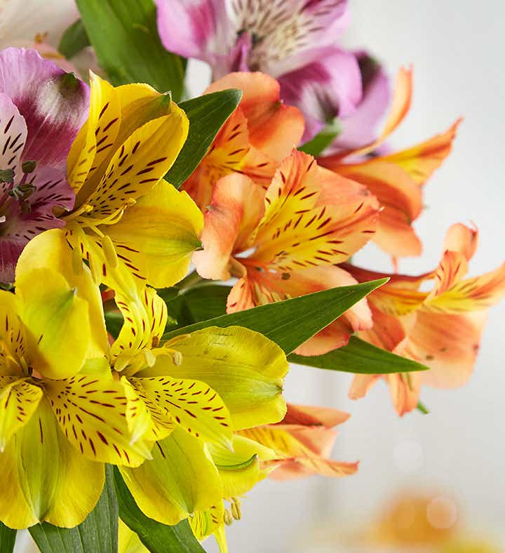
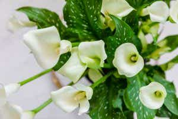
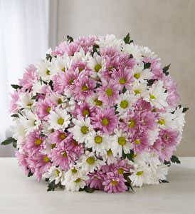
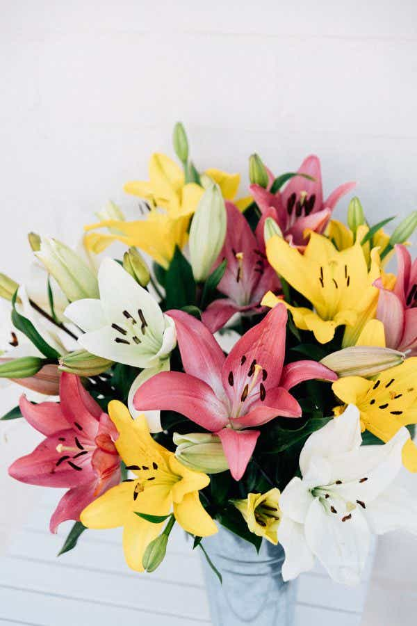
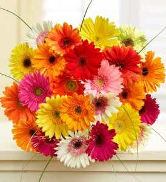

A Flower_Shop.com
Flowers, Plants & Gifting
Freshly Sourced will provide you with all the tricks of the trade when it comes to floral care.
From floral design classes to tips on how to prolong your new floral arrangement, we have sourced
expertise from floral maestros all over the country so you can show off your own unique craft.
Flowers come in thousands of different shapes and color combinations,
each with their own name and classification.
There are over 400,000 types of flowering plants, so there is sure to be a flower that speaks to
your unique personality!
If that seems like a lot to sort through have no fear – here is a quick list of some of the most
popular flower types
Alstroemerias:
Alstroemerias are more often called either Peruvian Lilies or Lilies of
the Incas and are native to South America. |
 |
Calla Lilies:
The Calla Lily is associated with faith and purity. For this reason,
religious figures like the Virgin Mary are often depicted holding a
bouquet of calla lilies. |
 |
Daisies:
Daisies are found on every continent other than Antarctica and belong to one of the largest known plant families.
|
 |
Lilies:
Lilies are one of the most popular and versatile flowers in the world.
|
 |
Gerbera Daisies:
The fifth most popular flower in the world, the Gerbera Daisy comes in a full rainbow of colors, including pink, orange, yellow and red.
|
 |